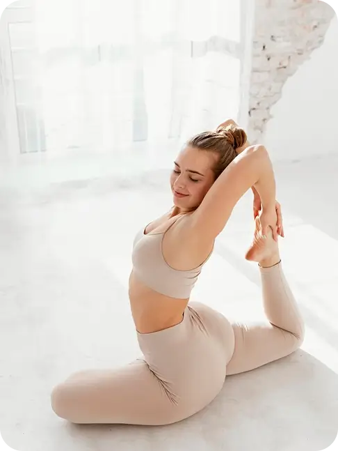
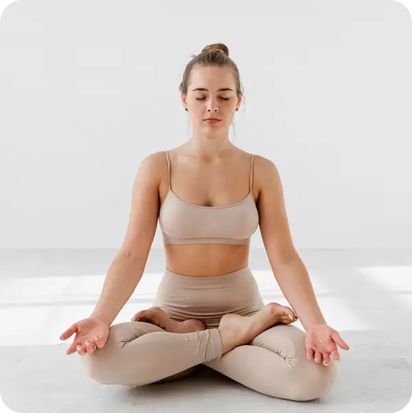
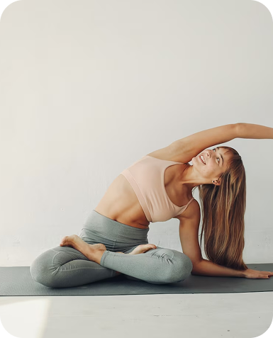
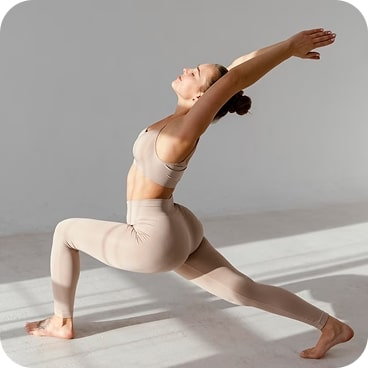

Convert From PNG to WebP
-

From (231kb) to (9.6kb)
-

From (217kb) to (1o.7kb)
The coolest option for optimization and best quality (doesn't work in Safari)
The coolest option for optimization and best quality (work in Safari)
Convert from PNG to JPEG
PNG (110kb), JPEG(15,1kb)
SVG Icon
svg-icon as a pseudo-element;
SVG as a decor element.
-

- 
- 